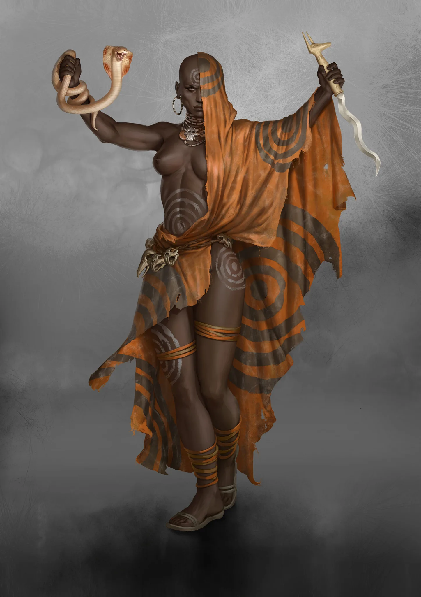

Leaders
- Decentralized Hogons
- Ezenwa
- Naku (Ka)
CULT DOSSIER
Keepers of the Prophecy
+1 to maximum skill level

THE CULT
The Anubians consider themselves the chosen ones of Africa: guardians of its people, interpreters of the ancestors, and keepers of a secret path that leads toward Cairo. Seven white Circles tattooed around the navel mark the transformations an Anubian must survive before becoming a perfect vessel of Ka. With every successful transformation, one Circle disappears and another layer of mystery falls away.
To outsiders, they are priests, judges, healers, spirit-talkers, and guides of the dead. To Anubians, these roles are only the beginning. Advancement gradually replaces superstition with understanding as sacred rites reveal biological mechanisms, Psychovore reactions, and deliberate transformation.
An Anubian begins when an Embalmer tests a candidate with the Finger of Anubis. Those who bear the Mark leave their old lives behind and undergo a ritual confrontation with death before rising as Initiates. Seven concentric Circles are tattooed around the belly, symbolizing both the wave carrying all life toward death and the stages separating the Initiate from Anubis.
Training begins with burial rites, legends, spirits, and the dangerous fringes of the Psychovores. Eventually the Initiate must face the Raze and survive the first catalysis. Later transformations are overseen by Hogons using Anubis canopic jars, and each success erases the outermost Circle.
Lower ranks see the Circles as mystical proof of progress. Higher Anubians understand that the tattoo reacts to epigenetic transformation and vanishes only when that change has occurred. The ritual is real, but so is the biology beneath it.
Anubian belief describes existence as a wave connecting life, death, memory, and ancestry. The dead continue through stories, rites, and the whispering carried across Africa.
Psychovores give this belief a physical foundation. They receive human emotions and aspects, channel them through their network, and return them through what Anubians and Spitalians call the ether. Embalmers and Soul Seers learn to interfere with these transmissions, overlaying the whisper with their own emotions or suppressing some influences in favor of others.
To most Africans, this is communion with the ancestors. Higher Anubians increasingly understand the Psychovores as amplifiers and themselves as keys capable of influencing the network. Both interpretations can exist at once.
Anubians do not rule through armies or Dinars, yet their authority runs deeply through villages, Scourger communities, and Neolibyan circles. Enchanters advise on marriage, wells, rites, and disputes. Embalmers teach Initiates and speak for the dead. Soul Seers judge character, examine the Thread of Life, and counsel rulers and merchants.
They also guide Africans through death. Corpses are anointed, wrapped, and taken to Bonefields, where Anansi spiders weave cocoons around them before burial. Africans feed and shelter Anubians, seek their blessings, and accept their judgments. In turn, the Cult sees itself as the soul of the African Lion, tending its flesh and guiding its claws.
The Anubian body becomes stranger with every transformation. Their blood reacts with Psychovore poisons, binding them into new compounds and creating a biological system unlike that of ordinary humans.
Healers deliberately exploit this process. They harvest Duat fruit from the Psychovores and consume it despite the Raze. Catalysis drives the body into a deathlike state while its chemistry changes. Those who awaken may carry blood capable of soothing pain, stimulating the body, or treating illness when mixed with herbs and earth.
Hecateans carry this mastery farther. Their metabolism can be deliberately reconfigured, and the Imiut ritual allows them to repair a newly severed Thread of Life in someone who has only just died. Treated with Duat blood and sewn into a prepared skin, the dead can sometimes return days later, weakened but alive.
The same knowledge produces Marduk oil, prized for negating the beguiling effects of Pheromancer scents. To villagers it may appear miraculous. To advanced Anubians, miracle and biochemistry increasingly become different names for the same process.
Not every Anubian follows the path of healer or mystic. Sickles travel north with Scourgers and Neolibyans to hunt Psychonauts. Their altered bodies react to nearby Aberrants with pain and sickness, allowing them to sense a Psychonaut before seeing it.
They read these sensations as weaknesses in the Psychonaut's Chakra. Armed with the Khopesh, a Sickle strikes where his own body tells him the enemy's power emerges, cutting the Aberrant's Thread of Life rather than merely wounding flesh.
Those who continue along this path may become Ammits, judges and executioners associated with the devourer of unworthy souls. They are said to feel lies, sense falseness, and remain attuned to humans, Psychonauts, and Psychovores alike.
Soul Seers stand where Anubian mysticism becomes difficult to separate from science. They can force passages through Psychovore growth, turn the vegetation's defenses against enemies, and examine another person's Thread of Life for signs of health, disease, weakness, or approaching calamity.
Their talents are valuable beyond Africa. Neolibyan merchants employ them to assess important partners, while Spitalian Consultants grant them access to research groups. Soul Seers work beside Spitalians on genetics, Psychovore behavior, and Anubian transformation.
With each Circle shed, advanced Anubians are expected to understand more and believe less blindly. Anubis gradually becomes not merely a god, but a principle to be comprehended.
All Anubian paths point toward Cairo. The ancient city lies buried beneath the Psychovores, its streets and pyramids swallowed by lethal vegetation. Ordinary Africans cannot approach it, and even experienced Anubians who trespass where they are not permitted may return ravaged by the Raze.
Hogons stand on the third Circle, the last stage openly visible beyond Cairo. They oversee transformations, study anatomy and biochemistry, judge whether other Anubians are ready to advance, and search hidden crypts for canopic jars and ancient knowledge. Their own transformation eventually draws them toward the forbidden city.
Cairo is more than a headquarters. It is the Cult's greatest secret. Ancient halls, machinery, books of the dead, sarcophagi, and the source of the canopic jars are all connected to it. What waits beyond belongs to higher transformations almost no outsider has witnessed.
Across Africa, Anubians search for the whisper of the ancestors. Sometimes it leads underground into prehistoric vaults of glass and polished stone where impossibly ancient bodies lie sealed inside elaborate sarcophagi.
These remains are tied to the First People and the Thread of Life. Hogons recover their sarcophagi and bring them toward Cairo, while strange books of the dead found nearby are treated as signs that another transformation approaches.
As Anubians progress inward, old symbols lose importance and the solar cross emerges in their place. Hogons claim it contains a truth connecting past and future, and the Jackal's Prophecy is derived from it. Their rites conceal fragments of a plan whose origins reach far beyond the post-Eshaton world.
Anubians are priests who gradually discover that their miracles have mechanisms, scientists who preserve rituals they no longer interpret literally, healers who poison themselves to create medicine, and guardians who manipulate the same Psychovores that kill ordinary people.
Their central tension is the distance between what Africa believes about them and what they increasingly learn about themselves. An Enchanter may sincerely hear the ancestors in the leaves. A Soul Seer may understand those whispers as signals carried through the Psychovore ether. A Hogon may recognize both interpretations as incomplete.
Every transformation makes an Anubian stronger, stranger, and less certain that the previous Circle's truths were complete. Cairo waits at the center of the mystery, and every vanished Circle brings them closer.
THE SEVEN CIRCLES
Select a rank in the hierarchy to read its complete entry.
GIFTS OF THE WAVE
TOOLS OF THE ANCESTORS
Open or close each equipment group to focus the reference.